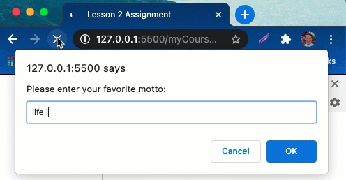
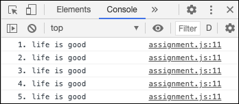

Lesson Assignment
Overview
The purpose of this assignment is to demonstrate your understanding of loops and functions in JavaScript.
Write a JavaScript program that displays text to a user x times. Your program must include the following elements:
an html file to run in the browser, and prompt the user for input
a function named
getMotto()that will prompt the user for their favorite phrase or motto. This function should return a string that includes this motto.a function named
getCount()that will prompt the user for the number of times they'd like to see this motto displayed to them. TIP: you will need to use parseFloat.a function named
printMotto()that will accept two parameters: (motto, count). It will include a loop that will cause the motto to be displayed in the console count times.
Here is a demo of the program running the way it should:
Stretch Challenges
Include the count number each time you print the motto.
Write the loop as a while and a for...they should do the same thing even though they're different.
Include another prompt function and incorporate that into your program.
Save/push changes to Github
Now that you have finished your program, it is time to save it in Github. We do this so that potential employers can see your work. It is good to be in the habit of saving your code in Github even in the very beginning. Anytime you write a program or work on a project, you will want to do what we are about to do now.
Open the terminal in VS code by right clicking the
JavaScript1folder and selecting "Open in Integrated Terminal".execute the following commands:
git status- This will show what changes have been made in your repository.git add .- This will prepare all of your changes for a commit (which will be saved in version control if you ever need to view or return to the state that your code is currently in).git commit -m "Lesson 2 assignment"- This will save the changes that you just added with the name that you put for the message, in this case: "Lesson 2 Assignment".git push- This will save your code in Github. Now you could go to the github.com website and view your code their as well along with your commit.Navigate to github.com and verify that your repository shows your latest code.
Submit Assignment
Fill out This Form to submit your assignment. You will need your github repository url (ie: https://github.com/yourUserName/JavaScript1) to complete this form.